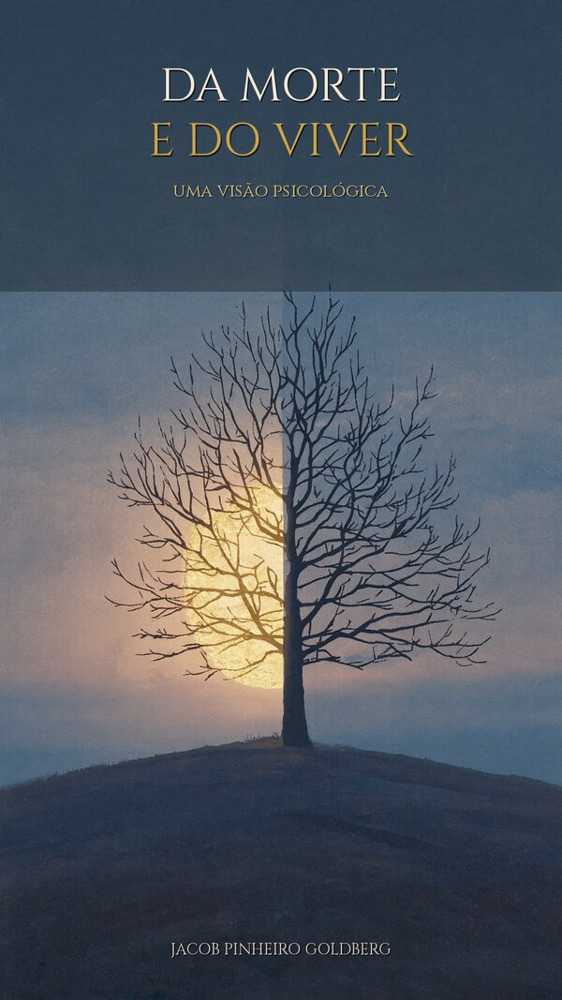

Uma vida de psicologia, literatura e travessia — diretamente das mãos do autor.
Estar perdido é a possibilidade extraordinária da esperança. Só quem está perdido tem esse alimento de alma: a esperança de se encontrar.

De um diálogo com Stanford a uma meditação sobre o fim, Goldberg encara a morte não como ameaça, mas como a mais honesta das interlocutoras. Um livro sobre encontros e desencontros, sobre se perder e se encontrar.
Trinta e nove títulos — psicanálise, poesia, ensaio e a memória de um Brasil.
A vida é em zigue-zague. O destino se ri dos planos dos homens.
Quem faz projeto é engenheiro.
Com uma vida inteira dedicada ao divã, é uma das vozes mais singulares da psicologia brasileira — psicólogo, poeta e ensaísta de raiz judaico-mineira.
Sua obra atravessa a morte, o exílio, a imagem e a palavra. Levou seu pensamento de Juiz de Fora às videoconferências para a Universidade de Stanford, sempre fiel a uma ideia: a de que escutar é um ato corporal.
A loja digital está nos ajustes finais de pagamento e entrega. Em breve, cada obra poderá ser adquirida e baixada na hora — com segurança.